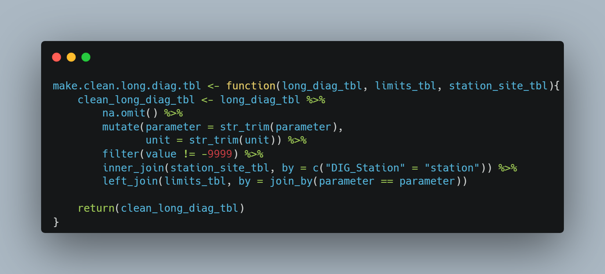
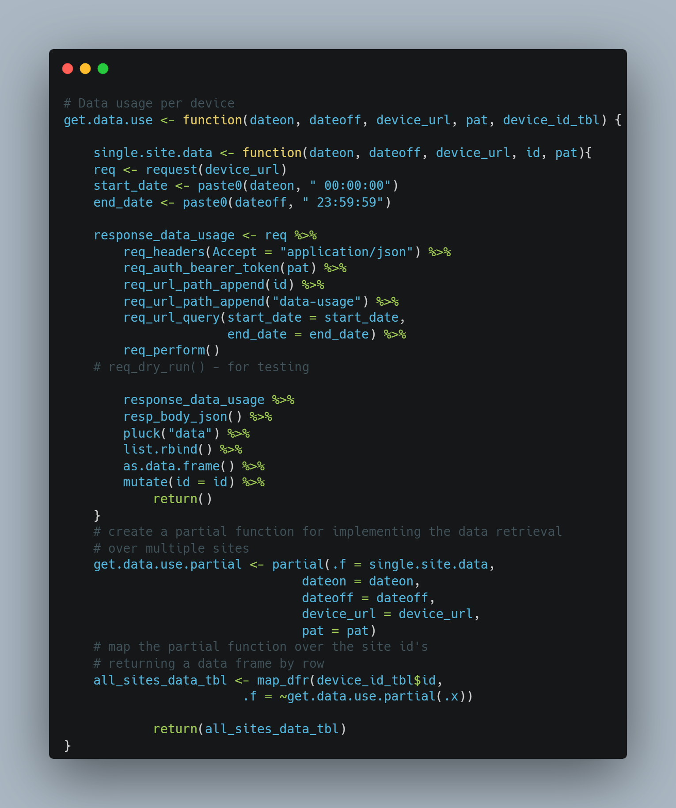
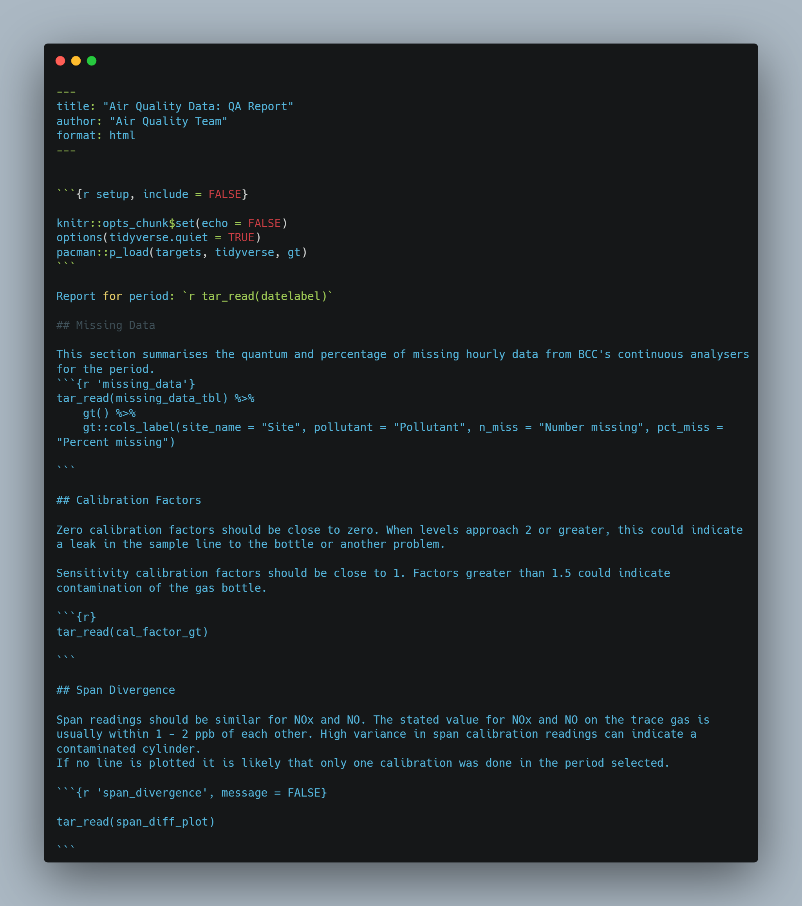

Diagnostics and Quality Reporting Analytics Pipeline for Air Quality Monitoring
1 Introduction
The aim of this project is to create a Reproducible Analytic Pipeline (RAP) to collate, summarise and report the operating characteristics of the council’s air quality monitoring network and provide assurance that the system is operating within desired parameters. This minimises data quality risks by identifying problems and mitigations in a timely, structured and evidenced way.
The project complies with relevant guidance from Defra who are the ultimate customer for this activity.
Apprenticeship KSBs are logged in the text in square parentheses in bold e.g. [S1, K11]
2 Project Scope
The scope of this project is the operation and calibration of the continuous air monitors operated by Bristol City Council. The council operates other monitors (diffusion tubes), but these will not be covered in this project as the quality review period is annual rather than monthly and different data collection and quality criteria apply. Diffusion tube data quality is largely captured in another portfolio project.
The diagnostics element of this project only applies to the NOx (Oxides of Nitrogen) instruments. The council operates PM2.5 instruments, but diagnostics data are not recorded in a usable way.
Summary analysis of data loss is included as there are minimum data capture requirements to meet according to the technical guidance. Performance and quality metrics for telemetry equipment associated with the continuous analysers are reported. [K8, S6]
Summaries of calibration data quality are included in scope.
3 Project Plan
- Review relevant guidance and consult with colleagues to identify appropriate report outputs [K9, S7]
- Identify and confirm data sources as inputs to the project
- Confirm optimal approach to building a robust RAP [B4]
- Develop code for pipeline
- Test code to verify accurate reporting
- Liaise with colleagues to confirm acceptability [K9, S7]
- Adjust pipeline as necessary
- Move to production
4 Key Performance Indicators
This project is about reporting KPIs which relate to the operation of the QA process for air quality data. The KPIs of interest are:
- Data collection better than 85% for hourly data reported annually
- 4G data use below 3GB per site across router fleet per month
- Identification of gas contamination within 3 weeks of last calibration
- Identification of analyser system faults
In terms of the project itself, the KPI is that colleagues must be able to run the monthly report and review results, taking appropriate action where needed. This was established through dialogue with colleagues. [S12, B3]
5 Overview of Regulatory Regime and Business Context
5.1 Regulatory Regime
It is important to set the context of air quality monitoring in order to understand the regulatory framework, monitoring requirements and implications of low - quality data and hence analysis presented in the project.
Under The Environment Act (1995) local authorities must monitor air quality. If pollutant concentrations exceed limits, an Air Quality Management Area must be declared, and an air quality action plan implemented. This is called the Local Air Quality Management regime. In addition to this system, the UK government published its Air Quality Plan for nitrogen dioxide in 2017.
This has resulted in certain local authorities (including Bristol) being required to introduce specific “local plans” to deliver compliance with legal limits for nitrogen dioxide (NO2). In Bristol the key measure in the local plan is a Clean Air Zone (CAZ), which charges polluting vehicles to enter a central zone in order to encourage faster turnover in the fleet.
The CAZ was approved after submission of a Final Business Case (FBC). The FBC estimated a total capital cost of £44.3 million for the CAZ.
The FBC included dispersion modelling of air quality to include the predicted compliance date for meeting the NO2 limit values. The modelling is validated by measurements from our monitoring network. Hence the business case for the CAZ relies on the quality of the data captured by the continuous air monitoring network. This project aims to mitigate the risks of poor data quality and protect the council’s reputation and financial base. [K1, B1, K8, S6]
5.2 Monitoring Network and Calibrations
The continuous monitoring sites deployed in Bristol are shown in the map below.
The technical and data quality requirements for air monitoring of NOx with continuous analysers is contained in pages 127 to 131 of LAQM.TG(22). In brief, each site is visited fortnightly, and the NOx instruments are calibrated. [K1, B1]
Calibration is required because the instruments operate on a chemiluminescence principle where the concentration of the gas is determined by an optical measurement. The optical sensor’s response can diminish with time and contamination and hence the response of the instrument needs to be periodically determined. Calibration entails applying a known zero and span signal to the instrument fortnightly. This is attained by connecting a “clean” (zero) air supply via a scrubber which filters out any contaminant gas. Secondly a traceable gas is connected and the instrument’s span response recorded. A sample calibration procedure is reproduced below for a single site. [K8, S6]
Zero and span calibration factors are calculated from the form data. Instead of adjusting the response of the machine to these calibrations, the data themselves are changed manually by applying a linear correction in the database. Spurious or anomalous data are also removed. Every six months, the instruments are fully serviced and their responses are corrected to the calibration standards. [K8, S6]
6 Data Sources
The sources of data are summarised as follows: [S4]
- SQL server database (Envista). Stores air quality and diagnostics data. This is the only data source which is defined as organisational. The others are third party cloud providers. [S1]
- Google Drive. Calibration data is collected in the field with Google forms and stored in Google sheets.
- Teltonika Remote Management System (RMS). 4G router parameters through a REST API.
7 Data Classification
The data used are not classified as personal data. They relate to the operation of the monitoring network and are only of interest to the team managing the operation of the network, or a third party auditor of air quality data. The data are not published but could be made available on request. The data are structured, tabular or converted to such from a REST API source. [K4, S3]
8 Data Processing Pipeline
The pipeline for this project was built in R, using the targets package to ensure reproducibility and organise the functions. Data are extracted using database connections, the googlesheets4 package and the RMS API. Various data cleaning and processing functions are implemented in the pipeline to prepare the data for output in a Quarto document. [K3, S2]
9 Data Processing and Analysis Examples
Key elements of the analysis code are reproduced in this section. All the code is available on GitHub.
9.1 Derive Summary Statistics for Missing Data
A key requirement within the air quality guidance is that data capture should match or exceed 85% for hourly continuous measurements. If significant data are missing it indicates a machine or telemetry fault. This would result in a service engineer call out. [K8 S6]
To calculate this statistic, the hourly continuous data for each instrument are retrieved from the database and a function is iterated over the complete dataset to derive the number and percentage of missing observations. The function to retrieve data is not shown for brevity.
The consolidated long_aq_data_tbl is split into a list of tibbles (data frames), completely empty columns removed, and the miss_var_summary() function from the naniar package is mapped over each tibble in the list. The relevant pollutants are filtered from the resulting tibble and the columns are selected and renamed with transmute() function. The resulting tibble is piped into a gt() table. [K3, S2, S7]

9.2 Extract and Process Diagnostics Data
Diagnostics data from the NOx analysers are captured in a database on a data logger. Loggers are polled hourly and both measurement and diagnostics data are stored in a corporate database. The diagnostics data are extracted for the reporting. [S8]
The code below sets a database connection by retrieving the connection parameters from a config.yml file. The config file is added to .gitignore to ensure that credentials are not published on GitHub. [S1]
The connection object is used to retrieve the diagnostics table in the get.diag.tbl() function. This function also takes date parameters and filters the diagnostics table so that the temporal subset of data needed is retrieved. This function uses the dbplyr back end to generate SQL in R. [K11, S15]

The function below takes a long version of the diagnostics tibble, a tibble holding upper and lower limits for the diagnostics parameters, and a tibble relating the site ID’s in the diagnostics table to meaningful site names. It filters for missing, cleans column data by trimming white space and joins the three data sets to return a cleaned tibble in long format used in plotting and tabulation. The upper and lower limit are used to define the normal operating characteristics of the instrument. [S8]

9.3 Extract and Process Calibration Data
The calibration data are entered on a mobile device using Google forms and are held on a Google spreadsheet which calculates the zero and span factors from the data entered. Google sheets was used as it runs on any mobile device and data are not personal or private. An exemption to a corporate ban on Google forms was secured for this use case. [S1, K12] The screenshot below shows a portion of the calibration form used on a mobile device.
The googlesheets4 package is used to access the spreadsheet using the Google credentials object. The two functions shown below retrieve calibration and gas metadata from the spreadsheet and range specified in the read_sheet() functions and perform minimal data cleaning before returning a tibble. [S8, S4]

9.4 Create Output Table for Calibration Factors and Targets
The gt package was used to create a table showing how calibrations compare against optimal values. The data retrieved is pre - processed and passed to the function below. This function filters the data, sets targets for the calibration factors - zero for zero calibration and one for span calibration and groups the resulting data frame by site and date. This tibble is then piped into the gt() function which creates the output table as html. Formatting functions render the table in a way which conveys the summary quickly and clearly to the reader. [S12]

9.5 Retrieving Airtime Data from Routers
I specified the Teltonika routers and RMS because RMS enables secure remote management of the fleet of routers. RMS also supports remote access to devices connected to the routers, such as the windows data loggers which collect and store data from the analysers. The operation of the instruments, loggers and routers can be checked with RMS. This means site visits can be minimised. [K12, K11, S15] In addition to the web platform, there is a REST API which is used to retrieve router meta - data including airtime data use.
Airtime data is limited by contract to 3GB per device spread over all SIMs. Exceeding this limit results in excess charges or telemetry loss, hence it is important to regularly review usage. The screenshot below shows the device overview for the routers.

The function shown below takes the date span of interest, the device_url endpoint, the API Personal Access Token, and a data frame holding the device ID’s. The single.site.data() function gets data for a single device. This function is then partialised and mapped over the ID’s of the routers to return a data frame with the daily data use for each device in a single table. This is subsequently used for plotting. [S8, S4]

9.6 Plot Daily Data use of Routers
The function shown below takes a tibble and uses the ggplot2 package to plot a faceted column chart showing daily receive and transmit data totals for each router. Appropriate theme adjustments are made to make a visually appealing chart. [S12]

10 Targets Pipeline
All the functions used in the pipeline are implemented through the targets package. This creates a reproducible workflow by learning the dependencies in the pipeline and skipping redundant targets. This saves time when designing and testing the pipeline as computationally expensive targets are not re - run unnecessarily. Objects (targets) created by the targets pipeline are hashed to track changes to the data file. The hashes determine whether the target needs to be re - run. [K8, K11, B4]
The targets pipeline is built by coding a list of targets, where each target’s name is the object resulting from the command (function) of that target. A truncated extract of the targets list is shown below.

The image below is a subset of the entire network graph for the targets pipeline in this project and shows how functions, targets and outputs are related. The dependencies for the data_summary_tbl object are highlighted.

11 Project Outcome: Reporting Product
Colleagues indicated that the final reporting product needs to be easily readable and to highlight the key parameters which govern measurement quality and system reliability [S7, K9, S12]. I decided that an html output would be the ideal option [B4]. The file is portable across systems and can be easily published for sharing with engineers on a website such as Quarto pub.
The key outputs in the report are as follows.
- A
gttable showing the amount and percentage of missing data for the measurement period and cumulatively from year start. - A
gttable with spark lines showing the calibration factors used and their ideal target values. This is broken down by pollutant and site and indicates whether calibrations are providing correct data which which to adjust the measurement data. - A chart showing the divergence of span values for two pollutants. This can indicate problems with contamination in calibration gas cylinders.
- Charts showing the data use of airtime data by routers. This can identify excessive data use, which could indicate security breach or operating system problem. If data thresholds are exceeded, airtime can be cut which would inhibit our real time reporting of air quality measurements.
- Time series charts of instrument diagnostics. These are compared to high and low “normal operating characteristics” to show when instrument problems may be developing. This could for example be the sample pressure declining, indicating a leak in the system.
12 Generating the QA Report
The report components listed above are generated by the targets pipeline and compiled into a Quarto document rendered into html. This process works by referencing the objects created in the targets pipeline within R code chunks in the qa_report.qmd Quarto document. The document is rendered by the pipeline call to tarchetypes::tar_render(). [K3, S2]
An extract from the QA report is reproduced below to illustrate the format.
The top three lines are YAML which sets up the title, author and format. The next chunk, denoted by back ticks (```) sets options and packages. The following sections are combined text and code chunks. The R code in the chunks reads the relevant target to source and render the visualisation using the tar_read() function.
The overall process for running the pipeline and rendering the report is in two steps.
- Enter the start and end dates in the functions.R file
- Run _targets.R using the
tar_make()command

13 Research and Findings
Some examples of visualisations are shown below.
This chart shows the diagnostics data for a single site. Some familiarity with the principle of operation of the instruments is needed to parse the data shown. The officer reading the report can be guided by the upper and lower limits shown in dotted blue lines. These limits are defined by reference to the manual for the Teledyne T200 instruments. The chart or document can easily be sent to the contractors to help them diagnose problems with the instrument.
The instruments contain components that should be maintained within certain parameters, for example Internal Box Temperature which should not go above 40˚C. Similarly a sample flow rate that deviates from the limits could indicate a leak or pump failure. [S12]
The bar chart shown below indicates the daily receive and transmit data use for each router. Six sites operated by BCC have loggers running Windows 10. Windows updates and other downloads related to the loggers consume the majority of the data. Updates are often run at the end of the month so high data use is normal to see here.

The chart below uses the same data but accumulates data usage. Here it can be seen that one site (Wells Road) is using an unusually large amount of data. This was investigated and the cause (windows update settings) rectified. [B4]

The calibration factors chart shown below gives a visual check for the zero and span calibration factors for each pollutant at each calibration.
Zero calibration factors should be close to zero. When levels approach 2 or greater, this could indicate a leak in the sample line to the scrubber.
Sensitivity calibration factors should be close to 1. Factors greater than 1.5 could indicate gas contamination. [S12]

Span readings should be similar for NOx and NO. The stated value for NOx and NO on the trace gas is usually within 1 - 2 ppb of each other. High variance in span calibration readings can indicate gas contamination.
In the example shown below, the Parson Street site is showing a significant change in the divergence between NOx and NO span values. This should trigger a call out to the engineers. In this case the cause is likely to be contaminated gas, where air has entered the cylinder and changed the concentration of the gas through oxidation. [K8, S6]
14 Summary of Project Activities
- Review of technical guidance and liaison with colleagues to confirm general approach and desired output [S7, K9]
- Identify and configure data sources to be used in the project [S1]
- Procure and configure Teltonika RMS and access via API with PAT [K12]
- Design and configure field data collection system with tablet and Google forms (before project) [K12]
- Configure analysers and data loggers to support automatic collection of diagnostics data (before project) [B3]
- Research and test pipeline tools for analysis [K3, S2]
- Write and test code in R to deliver pipeline in
targets[K3, S2] - Write Quarto reporting document
- Present to colleagues to confirm acceptability of concept [S7, S12]
- Move to production [K3, S2]
15 Recommendations and Conclusions
This project implements an important set of data quality controls related to continuous air monitoring and contributes towards greater confidence in the air quality monitoring. I have gained a greater understanding of the operation of the entire system through undertaking this work and feel able to fully explain its operation to stakeholders.
Implementing the project through targets and a Quarto report is helpful to end users as it automates the process. However there is a risk that code may break, because of updates to libraries or unanticipated data. This could be mitigated by introducing a reproducible environment management component like renv or anaconda. Alternatively, a docker image could be built to control both libraries and the version of R used. Support for these options within the organisation is limited and relies on personal accounts and access to virtual machines. Further unit testing of the code would improve reliability. [K8, B11, B4]
Ensuring the long term viability of this approach means that the end user needs to have an understanding of R and be able to parse the code written. This relies on in house expertise in R, and although colleagues are learning R, they may not be able to resolve issues in the short term if I am absent. Nonetheless, the code base will be there as a resource for colleagues when capability has been built.
There is more that could be done to add to this report. For example, because the calibration factors are manually applied to the data in the database client application, there is potential for human error. This could be checked by running routines to verify correct calibration factors are applied. Alternatively the factors could be automatically applied with update queries on the database. However, there is still a manual element to data ratification in terms of removing anomalies so some potential human error would remain. [K8, S6, K11]
The analytics pipeline could be further developed by creating an R package. This would be the optimal way to create a coherent set of processing and analytic functions. This is something I am researching but will not be able to implement in this project. [K11]
15.1 Business Benefits
It is vital that stakeholders have confidence in the quality of air quality data. Multi - million pound decisions are taken on the evidence from air monitoring, such as the implementation of a Clean Air Zone. There is therefore a great deal of scrutiny of the data. The output from this project demonstrates that a rigorous and transparent QA process is conducted at monthly intervals on the data. It also ensures that operational parameters are regularly reviewed to maintain reliable data flow and real time publishing of our air quality data. [K8, S6]
16 Appendices
16.1 Appendix 1: KSB Mapping
K3: Principles of the data life cycle and the steps involved in carrying out routine data analysis tasks
The reporting pipeline takes data stored in databases, online spreadsheets and remote monitoring platform and conducts data analysis steps to assess data quality and provide summaries and visualisations for end users.
K4: Principles of data including open and public data administrative data and research data
The data used are not personal data. They relate to the operation of the monitoring network and are only of interest to the team managing the operation of the network, or a third party auditor of air quality data. The data are not published but could be made available on request.
K8: Quality risks inherent in data and how to mitigate or resolve these
This project is about mitigating data quality risks for air monitoring data. It seeks to minimise risks arising from the calibration of the instruments and the operation of the system by tracking and reporting key parameters.
K9: Principal approaches to defining customer requirements for data analysis
I have consulted with colleagues about the format of the report and the metrics to be included in the analysis and adapted the reporting pipeline to deliver this. I have presented the work to my team and trained them to run the pipeline.
K11: Approaches to organisational tools and methods for data analysis
I have used the R software to process and analyse the data, developing secure and robust analyses in line with corporate requirements.
K12: Organisational data architecture
I have used the relevant data sources such as the SQL Server database “Envista” to source air quality and diagnostics data. This is an Azure database maintained corporately. I have used other approved data sources such as Google spreadsheet and RMS to source data.
S1: Use data systems securely to meet requirements and in line with organisational procedures and legislation including principles of Privacy by Design
In accessing and processing the data I have followed best practice to obscure credentials, by using the config package. None of the data used are personal. There are no privacy implications in the analysis conducted and the activities are not covered by GDPR or privacy legislation.
S2: Implement the stages of the data analysis lifecycle
The project report clearly documents the data analysis life cycle. For this work, the reporting is conducted monthly to analyse the previous month’s data and report on quality aspects. Analysis includes extracting, cleaning, combining (joining), summarising, visualising and reporting. No modelling or machine learning is done in this process. Diagnostics and air quality data are retained indefinitely. Telemetry parameters are retained for approximately three months.
S3: Apply principles of data classification within data analysis activity
The data are structured, tabular or converted to such from a REST API source. Unstructured data such as images, video or text corpuses are not used in this work.
S4: Analyse data sets taking account of different data structures and database designs
The project includes multiple examples of analysis of data from different sources (database, API, Google spreadsheet) and structures (tabular, JSON array). Analysis includes functions to summarise data with measures of central tendency, missingness, cumulative sum etc.
S6: Identify and escalate quality risks in data analysis with suggested mitigation or resolutions as appropriate
This project is about data quality risks and mitigations to address this. Examples of how the reporting product addresses quality risks is shown in the cumulative data use chart and the NOx and NO span divergence chart. The risks in the data analysis within this project are covered in the recommendations and conclusions section.
S7: Undertake customer requirements analysis and implement findings in data analytics planning and outputs
I consulted with end users when designing the reporting product and as I developed the pipeline. I received useful feedback and amended the report by including enhanced explanatory text for the calibration charts. To some extent I am the customer for this product too, as I oversee the operation of the monitoring network.
S8: Identify data sources and the risks and challenges to combination within data analysis activity
Much of the analysis within the pipeline requires combining data from different sources. This includes joining by row, with inner or left joins on identifier fields. In addition to these SQL type joins, I use iterative functions like map_dfr() to generate data frames by row when extracting data from multiple tables in the database. It is necessary to ensure column types and names are correct when combining data sources to ensure that data are being joined on the right fields. Selecting the right type of join is important so that the anticipated number of records is returned. New changes in the dplyr join functions help to mitigate the risks in joining data by providing helper functions such as join_by() which I have used in my code.
S12: Collaborate and communicate with a range of internal and external stakeholders using appropriate styles and behaviours to suit the audience
I presented example reports to my colleagues in April 2023 to help improve the analysis and visualisations. The output is not suitable for external stakeholders as it is specifically for internal use. It may be of interest to other local authorities, but this would rely on them having the technical capacity to run R and a similar data architecture, which is unlikely.
S15: Select and apply the most appropriate data tools to achieve the optimum outcome
When considering the the most appropriate tools, the key choice for me was the programming language. The main database was already determined, as was the telemetry platform and field calibration data collection system. My choices about the language were limited to R and python as these are the only two languages I have any knowledge of. I have beginners level knowledge in Python, but intermediate level knowledge in R and I had already developed some functions in R for this type of data analysis that I could adapt to the pipeline. I also felt that developing a reproducible analytic pipeline in R was more achievable because good resources were available to guide me in this process such as the book: Building reproducible analytical pipelines with R. Once I had decided to use R, I identified the targets package to develop the pipeline and the quarto package to publish the report. I believe these are appropriate tools and I have satisfied myself that they are fit for this purpose.
B3: Work independently and collaboratively
I have worked on this project mostly on my own, but have consulted colleagues when designing the pipeline and reporting. I am the only person with knowledge of R in my organisation, so have needed to learn independently for the most part.
B4: Logical and analytical
I believe I have shown a logical and analytic approach to problem solving in this project. I have had to think and plan the steps in developing analysis for three separate components of the pipeline and test and integrate them into a functioning and robust analysis. This has helped me develop a workflow for this type of analysis which has advanced my ability in data analytics and added valuable new skills.